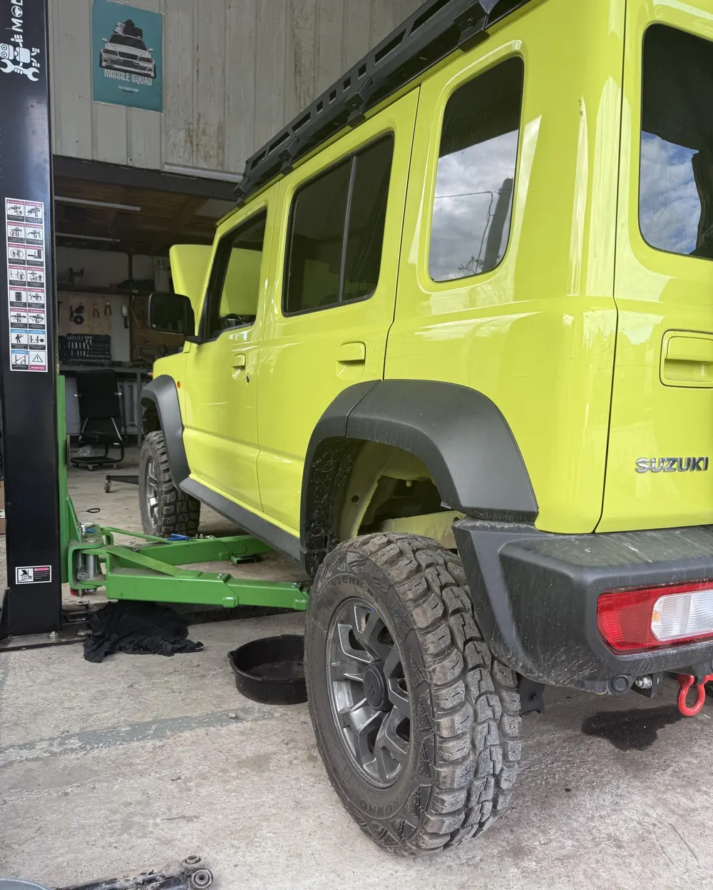

Владивосток · Постышева, 43 ст7
Гараж для вашего Jimny
Обслуживаем, ремонтируем и готовим к бездорожью Suzuki Jimny. Объясняем, что делаем и зачем.
- Оценка в 2ГИС
- 4,9 по 20 отзывам
- Работаем
- Пн-Сб, 10:00-19:00

Что делаем
Всё, что нужно Jimny после покупки и перед дорогой
Не знаете, что ставить? Подскажем, что пригодится под ваши поездки, а без чего можно обойтись.
Записаться- 01
Диагностика и плановое ТО
Заменим масла и осмотрим машину. Расскажем о слабых местах и о том, что стоит сделать сейчас, а что подождёт. Можно приехать на осмотр перед покупкой.
- 02
Двигатель и турбина
Ремонтируем двигатель и меняем турбину. Найдём причину постороннего звука при разгоне. Называем цену до начала работы.
- 03
Подвеска и лифт
Поможем выбрать лифт-комплект и поставим его, сделаем нужную переварку. Починим люфт ступиц.
- 04
Силовые бампера
Для поездок там, где асфальт заканчивается. Ставим и блокировки.
- 05
Шноркель
Выносит забор воздуха наверх, чтобы двигатель не захлебнулся на броде.
- 06
Колёса и арки
Подскажем по резине и дискам, поставим колёса побольше и расширители арок.
- 07
Багажник на крышу и свет
Подберём и поставим багажник и дополнительное освещение.
Зелёные, чёрные, синие, белые
Во дворе и в боксе стоят Jimny: одни на обслуживании, другие на постройке.
20 отзывов
Уже третьего своего джимника к ним привожу на обслугу и тюнинг. Сегодня поставили багажник на крышу. Помогли с покупкой и установкой, мне нужно было просто приехать и оставить машину.
Владимир Владимирович, июнь 2026
Осталась один на один с проблемами своего любимого Джима и случайно нашла страницу Дениса. Напросилась на диагностику и с тех пор их преданный фанат. Ребята профессионалы, влюблённые в Джимы.
Ольга Кривцова, январь 2026
Для меня Джимни машина новая и неизвестная, ребята всё сделали и объяснили доходчиво и понятным языком. В другом крупном сервисе Владивостока за ту же работу озвучивали цену почти в два раза больше.
Купил Джимника на аукционе и искал, где сделать плановое ТО. Лишней работы не накручивали: после диагностики сказали, что кроме ТО ничего не требуется.
Построили Джима с нуля. Лифт-комплект, необходимая переварка, подсказали, где и какие запчасти купить. Парни занимаются именно джимами, все работы проверены на бездорожье.
Появился посторонний звук в двигателе при ускорении. Диагностику провели бесплатно, озвучили стоимость ремонта. Цена не поменялась, а сделали даже раньше срока.
Обратился, чтобы подготовить машину к бездорожью. Рассказали, что ставить, установили лифт подвески, блокировку, багажник. Всегда были на связи.
Обратился с люфтом передних ступиц. Оперативно всё починили, пропал шимми после ям. Опыт по джимникам колоссальный.
Все отзывы в 2ГИСОтзывы из 2ГИС, сокращены
Приезжайте или напишите
Пн-Сб, 10:00-19:00. Воскресенье выходной
Оплата наличными, переводом с карты или через приложение